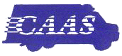

| |
K E M P S V I L L E V O L U N T E E R R E S C U E S Q U A D |
What is CAAS? |
 |
CAAS stands for Commission on Accreditation of Ambulance Services. It's an organization that has established a comprehensive series of standards for the ambulance service industry.
CAAS offers a widely respected accreditation program. Such accreditation signifies that a service has met the "gold standard" determined by the ambulance industry to be essential in a modern emergency medical services provider. These standards often exceed those established by state or local regulation.
KVRS has not yet applied for CAAS accreditation. Accreditation is a very expensive, and, administratively, very cumbersome endeavor. The KVRS vision statement, however, includes the intent that the squad maintain "an institutional platform of the highest caliber", and we take that phrase very seriously. So it makes sense for KVRS to measure itself against CAAS standards.
$Id$